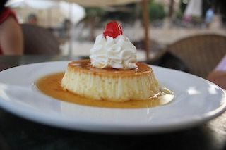

Creme caramel

Description
Custard dessert with a layer of clear caramel sauce.
Ingredients
- ¾ cup sugar
- 4 eggs
- 1 (14 ounce) can condensed milk
- 1 (12 ounce) can evaporated milk
- tablespoon vanilla extract
Steps
- Preheat oven to 325.
- Brown sugar in a saucepan till a medium dark golden brown, but not burnt and then QUICKLY transfer to the bottom of a pie plate(you may add a few tablespoons of water to help it melt).
- In a large bowl beat the eggs and then add the 2 cans of milk and vanilla extract, mixing well.
- Pour mixture into pie plate.
- Using a larger pan that the pie plate will fit in, fill half way with the boiling water, place in oven, and then place pie plate in the middle of the large pan.
- Bake for approximately 45 - 55 minutes. The center should be soft and firm but not liquidly.
- Let cool and then after running a knife around the edge to seperate, flip over onto a serving dish.